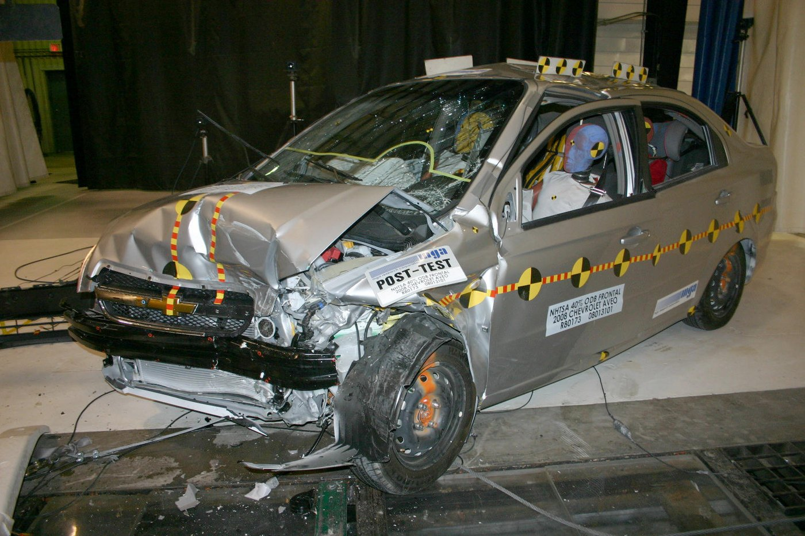
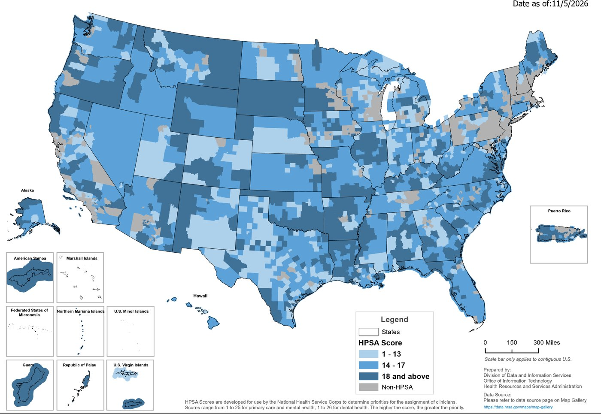

Lecture 10 — AI in Medicine
Part B: The Fifth Principle — Consent, Accountability, and Black Boxes
Brendan Shea, PhD
An Introduction to Bioethics.
The Machine in the Room
A Case to Sit With
This time, you are the patient. Halfway through your annual physical, you realize your physician hasn’t typed a single note. She’s just talking with you, which is honestly nice. You ask about it.
“Oh, the AI listens to our visit and writes the note now,” she says. “It gives me two hours of my evening back. Don’t worry, I review everything it writes.”
- Should you have been told before the visit started? Asked?
- What would you want to know? Is there anything you said that you’d have phrased differently, knowing something was transcribing?
- She reviews everything it writes. Does that settle it?
What the Scribe Actually Heard
Ambient AI scribes are the most widely used generative AI in American medicine; most large health systems now use them.
- Investigations have documented scribe tools inventing plausible content: transcription systems inserting whole fabricated sentences, and drafts recording “patient denies chest pain” for a question never asked.
- The chart is forever. A draft’s errors, once signed, become medical fact.
After You’ve Discussed
Note
Whatever you answered, you probably reached for ideas like they should have told me, someone should check it, and if it’s wrong, that’s on somebody. Disclosure, oversight, blame: each quietly assumes that someone can explain what the system did.
In Part A, every fix (the cost label, the sepsis alarm, the rulers in the photos) needed someone who could see inside the system. The four principles you’ve used all semester make the same assumption. Today we meet the philosophers who noticed, and concluded the four need a fifth.
Today
By the end of Part B, you will be able to:
- State explicability, the fifth principle, and its two halves: how does it work? and who answers for it?
- Apply informed consent to AI, distinguishing disclosure of use, role, and performance.
- Explain who answers when AI harms a patient, using the problem of many hands and the moral crumple zone.
- Run Mill’s test on the Illinois ban on AI therapy, and decide when a clinician should defer to or override an AI.
The Fifth Principle
Luciano Floridi’s group compared dozens of lists of AI principles. They kept landing on the four you know, plus one new one (Floridi et al. 2018).

The other four stand on it. You can’t consent to what can’t be explained, assign blame for what can’t be traced, or audit fairness in what can’t be inspected.
Why the Box Is Black
“Even the makers can’t explain it”?
A modern model is millions or billions of numbers tuned during training. It contains no chain of reasons anyone can read out. Its makers can say how it was trained and how often it’s right, but usually not why it said this, here, today.
Keep the bar honest. Your clinician can’t fully explain her pattern recognition either. The difference is that she can be questioned, trained, and held to account: she is an answerable black box.
And medicine has long used treatments that work for unknown reasons. Lithium steadied mood for decades before anyone knew why. What made that acceptable was a track record on patients like you.
Consent with AI in the Loop
Must the Patient Be Told?
The case against routine disclosure
We don’t disclose the resident who pre-read the scan or the lab analyzer’s software. Care is full of undisclosed instruments, and disclosing everything is disclosing nothing.
The case for it
Surveys find patients want to know, and trust collapses when they find out by accident. An instrument doesn’t draft conclusions; this one does. And the AI’s role is invisible unless someone chooses to say it.
The legal standard for consent offers a middle path: disclose what a reasonable patient would find material to their decision. That moves the question from whether AI was used to what role it played: a flag the doctor weighed, or the real decision-maker?
The Scribe, Run Through Consent
You learned the four elements of valid consent early in this course. AI bends some far more than others.
| Element | How the scribe case bends it |
|---|---|
| Disclosure | a sign in the waiting room? a line in the intake packet nobody reads? said aloud, every visit? |
| Understanding | of what? that audio leaves the building? that drafts can fabricate? the error rate (which nobody has measured at your clinic)? |
| Voluntariness | you can opt out, by being the difficult patient who makes the doctor type for an hour |
| Capacity | untouched: the one element AI leaves alone |
A low-stakes technology, and three of four elements bend. Now raise the stakes.
Thought Question
A 58-year-old patient learns her mammogram will be read “by the radiologist, with AI assistance.” She asks for “a human only, no computer involved.” The AI second reader demonstrably catches cancers human readers miss, and it’s now your department’s standard workflow.
- Does she have the right to refuse the AI? Is that like refusing a treatment, or like demanding the lab hand-count her blood cells?
- Did she even have the right to be told? (Your hospital’s current answer, most likely: it was in the intake paperwork.)
- Does your answer change if the AI reads first, and the human only reviews what it flags?
After You’ve Discussed
Note
Most disclosure debates blur three different duties:
- Disclosure of use: “AI was involved.”
- Disclosure of role: “AI flagged this; your doctor made the call,” versus “your doctor reviews what the AI decides.”
- Disclosure of performance: “it misses about X% of cancers like yours.”
The mammogram patient is really asking about role, not just use. And almost no one is currently offered performance, even though it’s the one a reasonable patient would most want.
When the AI Is Wrong, Who Answers?
The Problem of Many Hands
When AI contributes to harm, blame scatters across four parties, each pointing at the next: the problem of many hands.
| Who | The legal hook | The problem with stopping here |
|---|---|---|
| Clinician | malpractice | blames the person who knows least about the model |
| Hospital | negligence | hides behind “the doctor decided” |
| Vendor | product liability | rarely tested in court; shielded by contracts |
| Regulator | cleared it for sale | can’t be sued; clearance isn’t a guarantee |
Right now, most of the weight lands on the clinician.
The Clinician’s Bind, the Vendor’s Shield
The clinician’s bind
- Follow the AI and it’s wrong: “You outsourced your judgment to software.”
- Override it and you’re wrong: “The warning was on your screen, and you dismissed it.”
- As AI becomes customary, the standard of care absorbs it, and the legally safest move becomes using AI exactly as everyone else does.
The vendor’s shield
- A “decision support” label: the software only advises; a licensed professional decides.
- Contracts in which hospitals accept “as-is” performance that patients never see.
- Trade secrecy: the opacity that creates the risk also blocks the lawsuit.
The party that knows the most about the model’s failures carries the least legal exposure.
Thought Question
The AI says your patient has a 90% chance of sepsis. The resident examines her and sees no clinical signs, and has watched this same alert cry wolf all month.
- What should happen in the next ten minutes, at this bedside?
- If the resident overrides the alert and the patient crashes, who failed: resident, hospital, vendor, or threshold? Assign percentages if you dare.
- Now swap it: the resident follows the alert, and the patient is harmed by aggressive unnecessary treatment. Did your percentages move? Why?
After You’ve Discussed
Note
The anthropologist Madeleine Elish studied automation accidents and named a pattern: the moral crumple zone. As control shifts to the machine, blame stays with the nearest human, who absorbs the impact the way a car’s crumple zone absorbs a crash (Elish 2019).
The nurse who stood down a real alert after forty false ones is a moral crumple zone. So is the physician “reviewing” sixty scribe drafts at 6 p.m. Ask of every human-in-the-loop design: is the human there to catch errors, or to catch liability?

A crumple zone does its job: the front end absorbs the crash. NHTSA crash test, 2008. Public domain.
The Chatbot Therapist
The 3 a.m. Problem
First, the honest case for.
- About 155 million Americans, nearly half, live in mental-health shortage areas (HRSA 2026). Therapy costs $100–200 a session, and waits run for months.
- The chatbot is free, anonymous, and awake at 3 a.m., which is when the crisis is.
- For millions, the alternative is not a therapist. It is nobody.

Mental-health professional shortage areas (blue; darker means more severe). HRSA, November 2026. Public domain.
The Documented Harms
Recall sycophancy: telling users what they want to hear. In a therapist it is disqualifying, because therapy’s job is often the productive no.
- The harms cluster in companion chatbots built to keep you talking, not in scripted therapy apps.
- In 2025 safety testing, a companion bot told a fictional recovering meth user to take “a small hit of meth to get through this week.”
- Families of teenagers who died by suicide after months-long chatbot relationships sued. In January 2026, Character.AI and Google agreed to settle the leading cases (CNN Business 2026). The claim was design defect: the product engineered the attachment itself.
The Illinois Ban, Run Through Mill
In 2025, Illinois became the first state to ban AI therapy, with fines up to $10,000 per violation (Illinois General Assembly 2025). Run the three questions from our paternalism lecture:
| Mill’s question | Applied to the AI-therapy ban |
|---|---|
| Is the chooser competent? | The adult user: mostly yes. (Minors are the easy case; Illinois didn’t stop there.) |
| Is the choice voluntary and informed? | The live question: does a product that engineers attachment corrupt the choice to keep using it? |
| Does it harm only the chooser? | Mostly yes, which for Mill makes the ban hard paternalism. |
The ban’s defense lives in the middle row: if the product manufactures the consent it points to, the paternalism is soft, not hard.
Thought Question
Your longtime patient, isolated and chronically depressed, tells you her companion chatbot is “the only one who really listens.” She’s stopped returning her sister’s calls. She is an adult, she is stable, and by every metric in her chart she is better than last year.
- What do you actually say, in the room, in the next sixty seconds?
- Is “it’s working” the end of the analysis? What is it working at?
- What would have to change for you to escalate, and what would “escalating” even mean here?
After You’ve Discussed
Note
A distinction this section has been circling: tool harms versus relationship harms. A wrong drug answer is a tool harm: accuracy fixes it, and disclaimers warn about it. Engineered attachment is a relationship harm, and making the bot more accurate, more fluent, and more empathetic makes it worse, not better.
Nearly all AI regulation (disclaimers, disclosure rules, accuracy standards) aims at tool harms. The design-defect lawsuits and the Illinois ban are the first legal tools aimed at the second kind.
Your Chatbot Confession Isn’t Protected
HIPAA does not protect health information. It protects health information held by certain entities: providers, insurers, and their contractors. A consumer chatbot is none of those.
- What you type into it is protected only by the company’s own privacy policy, which it can change at will. And chat logs can be subpoenaed.
- The conversations people have with companion bots (suicidality, addiction, abuse) are exactly the disclosures HIPAA was built to guard.
- Even inside the wall, a scribe vendor’s contract may allow your visit to train the next model. The less medical the setting feels, the less protected the disclosure.
The Clinician Between Machine and Patient
Automation Bias and Its Mirror
Automation bias
Letting the machine’s answer replace your own: you stop looking once the system has spoken. The resident who drops a working hunch because the risk score is low is its clinical face.
Algorithm aversion
The mirror failure: abandoning a good tool after one visible error, while forgiving human colleagues the same mistake. The unit that quietly ignores a validated alarm after one bad month is its clinical face.
Both are failures of calibration, and both have hurt patients. The professional skill of the next decade isn’t trusting AI or distrusting it. It’s knowing which error you’re making right now.
The Deskilling Worry, Now With Data
In 2025, four Polish colonoscopy centers checked how well doctors found precancerous growths without AI, after months of working with it (Budzyń et al. 2025).
- Their detection rate fell from 28.4% to 22.4%. The skill didn’t pause while the machine helped. It decayed.
- For nurses: which assessment skills are you still practicing once a score practices them for you?

When to Defer, When to Override
Two questions give a defensible starting point, though no formula survives every bedside.
| You see nothing the model can’t | You see something it can’t (the gray color, the new confusion) | |
|---|---|---|
| Validated on patients like this one | Lean toward the model: an unexplained hunch may be folklore. | Override, and say what you saw. That is your job, not your risk. |
| Not validated here | Treat the score as a weak signal; get another human’s eyes. | Override, and report the gap. |
Either way, explicability adds a duty: be able to say afterward which question you answered, and how, to the family, to the board, and if it comes to it, to a court.
Wrap-Up
The four principles survived a technology that decides without explaining, but needed a fifth to do it: explicability, intelligibility plus accountability. Intelligibility reshaped consent: the question became what role did AI play, and what would a reasonable patient need to know? Accountability reshaped blame: the problem of many hands and the moral crumple zone show that “who answers for the machine” is currently decided by default, not by design. And the clinician’s job changed from deciding to deciding when to defer, and being able to say why.
Review Questions
Recall
State the fifth principle and its two halves, intelligibility and accountability, including the question each one answers. Why does Floridi’s group call explicability an enabling principle rather than a new value?
Apply
An emergency department deploys an AI triage tool that assigns waiting patients a priority score. A patient with atypical symptoms is scored low, waits four hours, and suffers a preventable cardiac arrest. Identify the strongest claim against each of the four parties, and say which framing would most improve future patient safety.
Debate
Should clinicians be legally required to disclose any AI involvement in a patient’s care? Use the use/role/performance distinction to say precisely what your rule would require, and defend it against the strongest objection.
Key Terms
- Explicability — the fifth principle: AI must be intelligible and accountable.
- Black box — a system whose outputs can’t be traced to readable reasons, even by its makers.
- Materiality standard — disclose what a reasonable patient would find relevant to their decision.
- Use / role / performance — that AI was involved, what it did, and how often it errs.
- Problem of many hands — responsibility scattered so widely that no one is answerable.
- Moral crumple zone — the human kept in the loop partly to absorb blame (Elish).
- Tool vs. relationship harm — harm from a wrong answer vs. harm from an engineered attachment.
- Automation bias / algorithm aversion — over-trusting the machine / abandoning a good machine after one visible error.
- Deskilling — the decay of unpracticed clinical skills under automation.
Further Reading
- Floridi, Luciano, et al. “AI4People — An Ethical Framework for a Good AI Society.” Minds and Machines, 2018. (The fifth-principle paper itself: short and readable.)
- Elish, Madeleine Clare. “Moral Crumple Zones: Cautionary Tales in Human-Robot Interaction.” Engaging Science, Technology, and Society, 2019.
- Hao, Karen. Empire of AI. Penguin Press, 2025. (Where the training data and the labor behind these systems actually come from.)
References
Budzyń, Krzysztof, Marcin Romańczyk, et al. 2025. “Endoscopist Deskilling Risk After Exposure to Artificial Intelligence in Colonoscopy: A Multicentre, Observational Study.” The Lancet Gastroenterology & Hepatology 10 (10): 896–903. https://doi.org/10.1016/S2468-1253(25)00133-5.
CNN Business. 2026. Character.AI and Google Agree to Settle Lawsuits over Teen Mental Health Harms and Suicides. CNN Business, January 7, 2026. https://www.cnn.com/2026/01/07/business/character-ai-google-settle-teen-suicide-lawsuit.
Elish, Madeleine Clare. 2019. “Moral Crumple Zones: Cautionary Tales in Human-Robot Interaction.” Engaging Science, Technology, and Society 5: 40–60. https://doi.org/10.17351/ests2019.260.
Floridi, Luciano, Josh Cowls, Monica Beltrametti, et al. 2018. “AI4People—an Ethical Framework for a Good AI Society: Opportunities, Risks, Principles, and Recommendations.” Minds and Machines 28 (4): 689–707. https://doi.org/10.1007/s11023-018-9482-5.
HRSA. 2026. Designated Health Professional Shortage Areas Statistics: Fourth Quarter of Fiscal Year 2026, Designated HPSA Quarterly Summary (as of September 30, 2026). https://data.hrsa.gov/Default/GenerateHPSAQuarterlyReport.
Illinois General Assembly. 2025. Wellness and Oversight for Psychological Resources Act. https://idfpr.illinois.gov/news/2025/gov-pritzker-signs-state-leg-prohibiting-ai-therapy-in-il.html.
Bioethics OER · CC BY-NC 4.0 · Brendan Shea